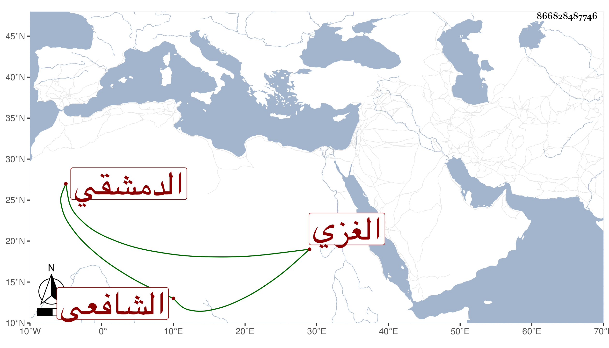

0902Sakhawi.DawLamic.ITO20230111-ara1.EIS1600.866828487746
Biography ID: 866828487746
23
محمد بن محمد بن أحمد بن عبد الله بن بدر بن مفرح بن بدر الرضي بن الشيخ رضي الدين الغزي الأصل الدمشقي الشافعي من نوابهم وهو المرافع في إبراهيم بن محمد بن إبراهيم بن المعتمد الماضي في سنة خمس وتسعين وأنبأ عن سقطاته ومساهلته الدالة على خفته وجنونه ومع ذلك فلم يخلص المشار إليه إلا في أثناء سنة سبع وتسعين وقاسي ذلا توجعنا له بسببه .
